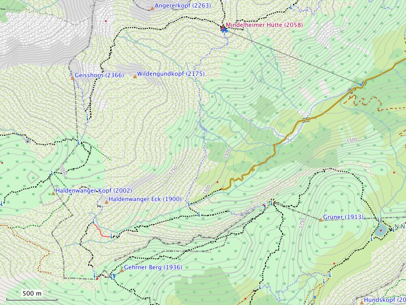

Bekannte Sachverhalte
Zeichenreihenfolge von Linien:
Die Reihenfolge, in der Linien gezeichnet werden, kann (leider) nicht beeinflusst werden und ist somit zufällig. Das heißt bei übereinander liegenden oder sich kreuzenden Linien kann nicht bestimmt werden, welche Linien unten und welche Linie oben liegt. Dies führt mitunter zu ungewollten Effekten. Beispiel: Einige Flussbrücken weisen "Lücken" auf. Diese entstehen, weil der Fluss über und nicht unter der Brücke verläuft. Das Routing wird hierdurch aber nicht beeinflußt.
Farben und Kontrast:
Vom Design her verwendet die Karte für viele Flächen eher "blasse" Farben mit "mittlerem" Kontrast. Straßen, Wege und wichtige Symbole werden "signifikanter" dargestellt. Insgesamt orientiert sich das Design am Mapnik-Stil der OpenStreetMap-Karte.
Ausdruck unter BaseCamp OS X:
Beim Ausdruck einer Karte unter BaseCamp OS X (Mac) werden die Symbole auf den Flächen um 180 Grad gedreht und zusätzlich gespiegelt. Unter BaseCamp Windows tritt dieses Problem nicht auf.

Kartendarstellung in BaseCamp: Der nördlichste Landpunkt Deutschlands - das Nordende (Ellenbogen genannt) der Insel Sylt auf 0m Höhe.
Gut zu erkennen auch die letzten Wanderdünen Deutschlands - die sich übrigens um 3-7 Meter pro Jahr nach Osten verlagern.
Geplante Verbesserungen, Benutzerwünsche
Detailverbesserungen:
- Darstellung von Watt-Gebieten verbessern
- Differenzierung bei Hinweisschildern
Aktuell gibt es keine noch nicht umgesetzten Wünsche von Nutzern.

Kartendarstellung in BaseCamp: Der südlichste Landpunkt Deutschlands - markiert durch das Staatsgrenzzeichen Nr. 147 auf 1883m Höhe.
Tipps und Tricks
Symbole des öffentlichen Personennahverkehrs (ÖPNV):
Insbesondere für die Nutzer des ÖPNV sind die Symbole für Bahnhof, Haltestelle und U-Bahn-Eingang prägnant dargestellt. Es besteht die Möglichkeit die Anzeige dieser Symbole zu unterdrücken. Hierzu sind in BaseCamp folgende Darstellungsfunktionen zu deaktivieren:
- Beförderungsmittel -> Landverkehr: Haltestellen, U-Bahn-Eingänge
- Beförderungsmittel -> Transitservice: Bahnhöfe
Symbole für Andachtsorte:
Andachtsorte wie Kirchen, Moscheen und Synagogen sind meist signifikante und bekannte Orientierungsmarken. Die Symbole hierfür werden prägnant dargestellt. Es besteht die Möglichkeit die Anzeige dieser Symbole zu unterdrücken. Hierzu ist in BaseCamp die Darstellungsfunktion für "Gemeinde -> Andachtsort" zu deaktivieren.
Symbole für Banken / Geldautomaten:
"Freizeit ist teuer" - aus diesem Grund ist das Symbol für den Geldautomaten prägnant dargestellt. Es besteht die Möglichkeit die Anzeige dieser Symbole zu unterdrücken. Hierzu ist in BaseCamp die Darstellungsfunktion für "Bank / Geldautomat" zu deaktivieren.
Sichtbarkeit von POIs im GPS-Gerät:
Viele POIs sind nur im höchsten Zoomlevel sichtbar. Für die Kartenanzeige in BaseCamp ist dies aus Gründen der Übersichtlichkeit sehr vorteilhaft. Im GPS-Gerät kann dies aber, aufgrund des kleinen Kartenausschnitts, nachteilig sein. Viele GPS-Geräte bieten aber die Möglichkeit das Zoomlevel für POIs intern anzupassen. Beim Dakota-20 findet sich diese Einstellung beispielsweise hier:
Einstellungen -> Karte -> Erweiterte Karteneinstellungen -> Zoom-Massstäbe -> Kartenpunkte
Höhenlinien:
Höhenlinien stellen in gebirgigem Gelände eine wichtige Zusatzinformation dar, wohingegen im Flachland Höhenlinien mitunter als störend empfunden werden. Es besteht die Möglichkeit die Anzeige dieser Linien zu unterdrücken. Hierzu ist in BaseCamp die Darstellungsfunktion für "Linien -> Höhenlinien" zu deaktivieren.
BaseCamp unter Mac OS X:
Um die Freizeitkarten unter Mac OS X nutzen zu können, ist zunächst die Anwendung BaseCamp (Garmin oder Mac App Store) zu installieren. Zusätzlich sind die Programme MapManager und MapInstall (Garmin) erforderlich. MapManager führt die eigentliche Installation der Freizeitkarten durch. Alle Dateien mit der Endung "gmap" werden mit dem MapManager verknüpft - ein Doppelklick auf eine gmap-Datei genügt dann zur Installation der Karte. MapInstall transferiert eine (Teil-)Karte in das GPS-Gerät oder auf einen externen Datenträger (Micro-SD-Karte). Um alle Features der Karte anzuzeigen, ist es empfehlenswert den Schieberegler "Details" auf Maximal einzustellen.
Plastische Karte:
Die Darstellung einer "plastischen Karte" wird nicht unterstützt. Die entsprechende Option sollte im GPS-Gerät auf "Nicht anzeigen" gesetzt werden. Anderenfalls kann es unter Umständen zu einer ungewollten "Kartenverdunkelung" kommen.
Mehrere aktive Karten im GPS-Gerät:
Im GPS-Gerät sollte immer nur eine Karte aktiv sein. Ist dies nicht der Fall, kann es bei überlappenden Karten am Rand zu Problemen bei der Anzeige (fehlende oder nicht passende Kartenelemente) kommen.
Wanderwege (Tipp von Günter aus Fürth):
Wer in der Freizeitkarte gerne noch Wanderwege der Wandervereine, Fahrradrouten, OEPNV etc. als Overlay einblenden möchte, kann sich unter http://osm.thkukuk.de/ die entsprechende(n) img-Datei(en) herunterladen, wie dort beschrieben, auf den Garmin übertragen und im jeweiligen Profil zusätzlich zur Freizeitkarte aktivieren.
Bei älteren Garmin-Garäten, die nur eine img-Datei mit dem Namen gmapsupp.img erlauben, müssen die Freizeitkarte und der/die entsprechende Layer mit Hilfe des Tools gmaptool,
wie ebenfalls unter http://osm.thkukuk.de/#installation beschrieben, zu einer einzigen Datei vereinigt werden.
Geräte- und Kartenverwaltung:
Empfehlenswert im Zusammenhang mit den Karten und dem GPS-Gerät sind einige Freeware-Tools von JaVaWa. Mit dem "JaVaWa Device Manager" kann man das GPS-Gerät verwalten. Z.B. Backups anfertigen, Besitzerinformationen hinterlegen oder das automatische Laden der Karten in BaseCamp unterbinden. Ganz ähnlich "JaVaWa GMTK" - damit lassen sich die in BaseCamp installierten Karten verwalten. Für Mac-User zusätzlich interessant ist das Utility "CleanEject" mit dem sichergestellt werden kann, daß alle in den Papierkorb verschobenen Objekte mit dem Auswerfen auch gelöscht werden.